El arte de la destilación a tu alcance. Descubre cómo transformar ingredientes en poderosos elixires para dominar cualquier situación.
La alquimia permite elaborar elixires que alteran tus capacidades: desde respirar bajo el agua hasta obtener una fuerza sobrehumana. Es una disciplina que requiere exploración y precisión en la mezcla de materiales.
Necesitarás un **Soporte de Pociones**, frascos con agua, y **Polvo de Blaze** como combustible indispensable para la destilación.
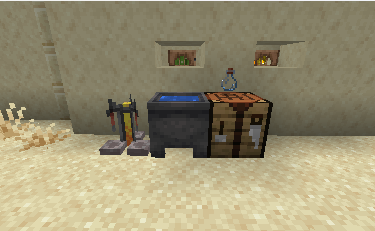
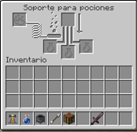
La **Verruga del Nether** es la base de casi todo; genera la "Poción Rara". Otros ingredientes como el azúcar o el polvo de blaze imbuirán efectos específicos.
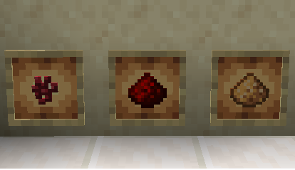
| Ingrediente | Efecto | Descripción |
|---|---|---|
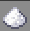 |
Velocidad | Aumento temporal en la velocidad de movimiento. |
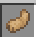 |
Super salto | Aumenta la distancia y altura de salto. |
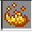 |
Fuerza | Aumento al daño cuerpo a cuerpo. |
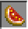 |
Curación | Restaura instantáneamente parte de la salud. |
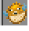 |
Respiración | Permite respirar bajo el agua. |
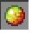 |
Resistencia Fuego | Protege contra el fuego y la lava. |
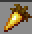 |
Visión Nocturna | Permite ver claramente en la oscuridad. |
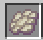 |
Caída lenta | Reduce velocidad de caída y previene daño. |
| Icono | Modificador | Efecto de Cambio |
|---|---|---|
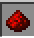 |
Redstone | Incrementa la duración del efecto. |
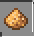 |
Piedra Luminosa | Incrementa la potencia (Nivel II). |
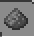 |
Pólvora | Convierte en poción arrojadiza. |
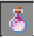 |
Aliento de Dragón | Convierte en poción persistente. |
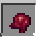 |
Ojo Fermentado | Corrompe e invierte el efecto original. |
A continuación tienes un mapa de todas las recetas posibles con los ingredientes mencionados.
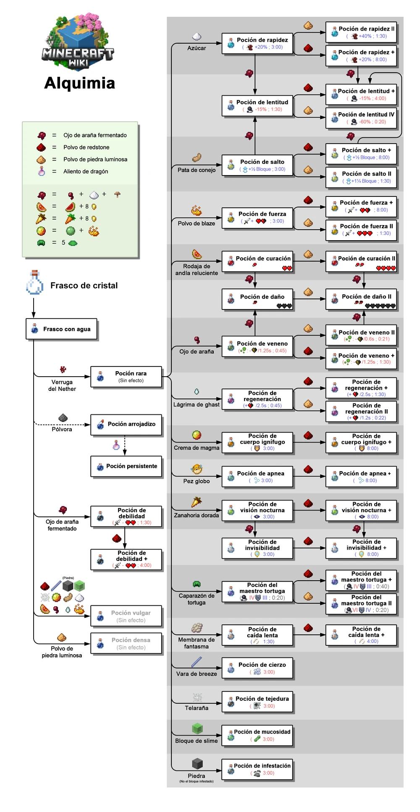